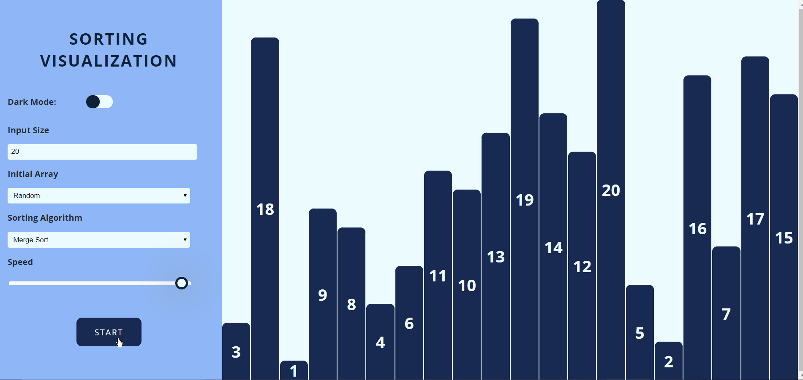

01) Sorting Visualizer
It is a tool for visualizing sorting algorithms. Different colors help in understanding the sorting process. Blue is the default color of all elements. Yellow represents the current position of the array. Red represents swapping or change in position. Green represents that element that found its position. Time and space complexity of the algorithm is displayed.
Features: Speed of the algorithm Size of the array Generate new array
Sorting algorithms: 1)Bubble 2)Insertion 3)Selection 4)Merge 5)Quick 6)Heap